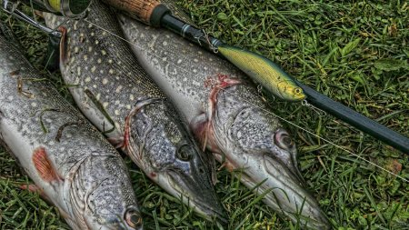
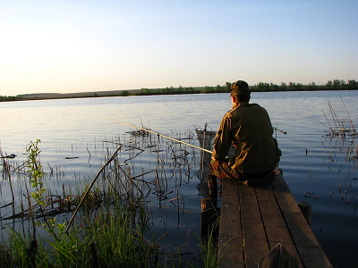
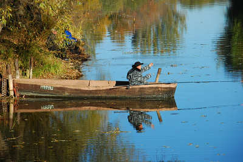
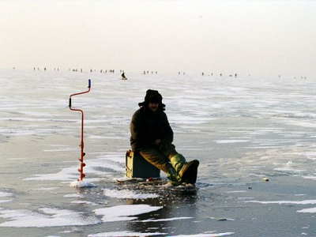

Если вам хочется надышаться чистым воздухом, полюбоваться богатством природы, наловить карасей, и не жалеть, что с другой рыбой не везёт, то вам сюда! Озеро Лукомское имеет береговую линию в более чем 36 километров. Изрезана она мало, выделяются только две губы – Турецкий и Гилянский заливы. Вода здесь чистая, благодаря особым водорослям, а волны часто бывают высокими, особенно при ветрах. Водоём считается частично техническим – отсюда берётся и сюда возвращается вода с местной ГЭС. В озере ихтиологи насчитали 20 видов рыб. Но в основном в уловах судак, лещ, щука, сом, и особенно много окуня. Не считается зазорным увозить плотву и густеру. Можете встретиться с очень ценными рыбами, от угря до осётра.
Весной
Лёд на озере даже в глухозимье таит опасность. Внешне прочный, он подтачивается тёплыми потоками с гидростанции, и завсегдатаи отмечают, что в марте и вчерашних ставок можно и недосчитаться – уйдут в полыньи. В апреле начинается карасёвый промысел ;) . Через час после прикормки на опарыша, на перловку и на зелёный пенопласт. В этот же период начинает охотиться и лещ. Кто-то вытянул озёрную редкость – форель, и большую – на 3 кг. Кто-то нашёл деликатесного угря. На спиннинг попадается судак. Но всё это – с берега. До первого июня спуск на воду лодок запрещён. Многими видами водоём зарыбляют, а некоторые ценные особи "сбегают" из соседних рыборазводных прудов.
Летом
Самая популярная рыбалка вблизи здравницы «Сосновый бор». Пирс от санатория доходит до кромки тростника. Там перепад глубин с 2-х до 4-х метров. Щука это место любит. Но народу всегда много. Лучше взять лодку напрокат. Судака, например, достают только на открытой воде возле сбросов. Не пытайтесь рыбачить дорожкой. Это запрещено. А в августе часто вода начинает цвести, и это большая неприятность для любителей. Но ещё хуже, когда всплывают сети с протухшей рыбой. Увидев это, рыбоохрану поминают нелестными эпитетами. В это время много леща, но очень велика его заражённость солитёром.
Осенью
Многие устремляются к тёплому каналу. Съехав с трассы, после железнодорожного переезда направо, по наезженной колее. Дальше – лучше подождать, пока кто-то проедет, и следовать за ним. В ноябре закрывают на канале ловлю на фидер. Последние вылазки на открытую воду на катере лучше начинать с проезда по Нижнему Лукомлю, по улице Набережной, до первого поворота направо ;) . Потом ещё метров 300 по гравию. Там съезд к каналу и большая глубина у самого берега. Возле одного из сбросов ГЭС есть мыс, с него хорошо ловить прямо на течении, в потоке, выпущенном со станции.
Зимой
На лёд в январе легко сойти возле деревни Абузерье. Или найти сход с высокого берега возле профилактория. Там хорошая глубина – до 8 метров и есть перепады. В феврале можно попользоваться старыми лунками, прикормить и ловить на чёрта с подвязанной мормышкой и подсаженным мотылём. Не обижайтесь, что размер добычи часто маловат – озеро подарило вам всю свою ширь и простор, и здоровый свежий воздух, В выходные на льду в радиусе полкилометра до 50 пингвинов и ставочников. Неплохо отзывается окунь, правда, спортивного размера. Плотва тоже некрупная, а та, которая зачётная, зимой клюёт только в местах, где есть течение.